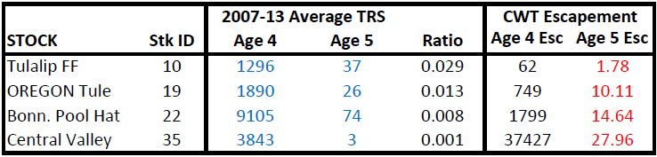

Base Period Documentation - Introduction
Introduction
The Chinook base period comprises the foundational Fishery Regulation Assessment Model (FRAM) data. The most important parameter, base period exploitation rates, is estimated from “base years” through stock-specific CWT recovery analysis and a process of Cohort Reconstruction. Base period data are averaged across base period years and represent all the static information needed for a model run. Resulting base period reference parameters are used to populate the FRAM model to predict annual stock/fishery specific impacts.
Fishing years 2007-2013 were chosen as the base period years, because they reflected the most contemporary period at the time the project commenced and additionally had good numbers of CWT recoveries from recently implemented mark-selective sport fisheries.
The process of creating the latest base period is also called the “calibration process”. There are two portions to the calibration process, data preparation (also called the “FRAMBuilder process”) and running the calibration program. The calibration followed the existing data structure of 39 stocks (adipose marked), 73 fisheries, and 3 time-steps.
In addition to CWT recovery data representing FRAM stocks, other key data needed for the development of the FRAM base period include: 1) escapements, 2) landed catch, 3) growth rates, and 4) fishery induced mortality rates. For a complete set of input data, see the data inputs section.
Overview
The main objective of a calibration is to estimate stock-fishery specific exploitation rates by averaging CWT recoveries over base period years and conducting a cohort analysis. Exploitation rates are estimated by time-step and age. A cohort and exploitation rate analysis necessitates full accounting of all fishery related mortalities along a stock’s migration path. While the basic processes for a cohort reconstruction are quite simple, much of the work of constructing a new base period lies in data preparation, dealing with missing coded-wire-tag recoveries, handling exceptions, adjusting CWT recoveries to match observed catches, and incorporating non-landed mortalities.
A simple diagram of the calibration process is presented in Figure 1. This program flow works for all stocks with sufficient CWT representation in base period years (37 of the 39 FRAM stocks). For a description of how to handle CWT recoveries from “out-of-base” years see Out-of-Base Procedures.

Figure 1 Calibration Overview
These steps will be described in detail in section Main Calibration Procedures.
The final step in the calibration cycle is the development of a completed “base period” input file used by FRAM. This file contains stock abundances, time-age-fishery specific harvest rates, maturation rates, growth rates, and various fishery related parameters such as hooking mortality rates covering the base period fishing years.
Preparation
A significant amount of effort went into planning the new Chinook base period in an environment with many stakeholders and new challenges.The original base period was over 30 years old with sparse documentation, lost institutional knowledge, and defunct and fragmented computer programs. During the initial phase, a team of expert discussed how to conduct base period outreach and review, evaluate CWT sample sizes, address challenges due to mark-selective fisheries, outdated programs, missing CWT representation, and much more.
Assemble a Team of Experts and Stakeholders
FRAM is used in several forums, such as the Pacific Fishery Management Council (PFMC) ,the Puget Sound co-manager process, and by many different user groups from federal, state, and tribal organisations. Updates and changes to FRAM can have wide-ranging consequences and affect escapement estimates and management objectives for model stocks, many of them protected under the Endangered Species Act (ESA). FRAM changes, especially major modification, necessitate extensive buy-in and review. During the initial phase, a team of experts and stakeholders representing tribal, state, and federal entities was assembled. A base period work group was established that met at least monthly. The workgroup consisted of the following members:
- Auerbach, Dan (Washington Department of Fish and Wildlife (WDFW))
- Bellman, Marlene (Northwest Indian Fisheries Commission (NWIFC))
- Carey, Jon (National Marine Fisheries Service (NMFS))
- Dapp, Derek (WDFW)
- Garber, Ty (WDFW)
- Hagen-Breaux, Angelika (WDFW)
- Howard, Jilian (Muckleshoot Indian Tribe (MIT))
- Johnson, Galen (NWIFC)
- LaVoy, Larrie (NMFS)
- McHugh, Pete (WDFW)
- Miler, Oliver (NWIFC)
- Packer, James (WDFW)
- Rankis, Andy (NWIFC)
- Richardson, Sarah (WDFW)
- Roose, Robert (Stillaguamish Tribe of Indians)
- Rose, Gordon (NWIFC)
- Schaffler, Jason (MIT)
- Schmidt, Casey (Suquamish Tribe)
- Shrovnal, Jeremiah (WDFW)
- Thurner, Stephanie (NWIFC)
Mass Marking and Mark-Selective Fisheries (MSF)
Development of exploitation rates relies on the recovery of coded-wire tags (CWT). Coded micro-wire is implanted in the snout of juvenile salmon prior to release. When recovered, the binary or numeric code on the tag identifies the tag group, and thus provides information about the location and timing of release, special hatchery treatments, etc. This information is used to assign CWT recoveries to individual stocks. Prior to mass marking a missing adipose fin was a visual indicator that a salmon contained a CWT. A sampler could then remove the snout and send it to the lab for extraction and analysis of the CWT. With mass-marking, this visual indicator was re-purposed as an identifier of a hatchery salmon. Having a method to distinguish hatchery from wild salmon ushered in an era of mark selective (MSF) fisheries, where anglers are required to identify (intact adipose fin) and release wild salmon. Unmarked Chinook are sporadically tagged as control groups, acting as surrogates for wild fish, to assess impacts of mark selective fisheries and mass marking (double index tag groups).
While Washington State switched to electronic CWT detection by trained samplers a few years before full implementation of mass marking, some States and Canada did not switch to this method of detection. Today, there are still several fisheries along the migration path of Washington native Chinook that are solely visually sampled. This results in not detecting CWT’s of adipose present (unmarked) salmon and thus biases exploitation rate analyses of unmarked Chinook. Additionally, even with electronic sampling, the recovery of CWT’s from unmarked fish is biased, because they are no longer retained in mark-selective fisheries. For these reasons, similar to the previous Chinook base period, it was decided to limit CWTs to recoveries from adipose marked salmon. Therefore, marked Chinook represent both marked and unmarked components of the same stock in new and old versions of base periods.
In developing the previous base period, CWT recoveries were related to total catches and total escapements to compute exploitation rates (“Total” frame of reference). Due to the influence of mark-selective fisheries in recent years, the new base period relates CWT recoveries to marked catches and marked escapement only (“Marked” frame of reference). The latter data manipulation allows for calibration under contemporary fishery conditions using the same calibration algorithms and procedures that have been used in the past; it simply views everything as a non-selective fishery (NSF) in a world populated by marked fish only. Doing otherwise (i.e., using total catches in mark-selective fisheries), would necessitate time consuming changes to calibration algorithms and infrastructure (i.e., databases, pre-processing programs/files) in order to relate recoveries to encounters rather than landed catches and to incorporate mark-selective fishing parameters.
Beyond calibration logistics, the “marked” frame of reference is preferable for other reasons. First, given the existence of a mix of non-selective and MSF regulations, the “marked” approach will yield cohort reconstructions results with less bias than the “total” approach. Second, even with full electronic sampling, sufficient DIT groups, and a means to integrate them into calibration, a “total” calibration would necessarily yield a base period built on specific MSF parameter assumptions (i.e., release mortality rates); these may or may not be consistent with future FRAM applications. Lastly, the inputs to a “marked” calibration are likely to have more certainty associated with them than those for a “total” calibration. Consider, for example, hatchery and wild escapement estimates—the former is often a census whereas the latter is an estimate with considerable imprecision and (possibly) bias. For more information see “Develop the new Base Period Using Marked Landed Catches” .
Despite its merits, the “marked” calibration approach introduces its own challenges. Most significantly, upon creation, a “marked” base period must be translated into something that can be applied on a “total” basis. Although this is straightforward for exploitation rates (i.e., ER for marked stocks become exploitation rates or encounter rates for unmarked stocks in NSF and MSF, respectively), “total” applications also require an estimate of Model Stock Proportion (MSP). MSP is the expected fraction of a fishery’s total catch that is comprised of model stocks. For these reasons, the calibration was performed on “marked only” catch and escapement values for the purpose of calculating exploitation rates and on “total” catch and escapement values for the purpose of calculating MSP.
Updating Computer Programs
A major task of the new base period project was to create efficient, easy-to-use programs for base period development and CWT processing. The original base period necessitated approximately a dozen programs. These programs were written in QBasic. The file editing process was prone to transcription errors and the formats of the various input files were undocumented and typically contained several disjointed sections where parameter values had to be entered. In many cases the output from one program was used to create the input file for the next program in the estimation process. Any data or selection changes usually resulted in re-running of all components of the system.
There are now just two programs to create a base period. Both programs are written in Visual Basic and interact with Microsoft Access databases for data storage and retrieval. The first program, FRAMBuilder, is used to process CWT data. This program error-checks, maps tags to stocks and fisheries, and summarized CWT data for the Main Calibration Program. The “Main Calibration Program” conducts cohort reconstructions, calculates base period exploitation rates, produces all parameters for a new base period, and exports output directly into the FRAM database structure.
Both programs are described in detail in later sections of this documentation.
Base Period Years
The Chinook FRAM base period project began in 2014 with the investigation of the feasibility of developing a dataset based on the analysis of coded-wire tag (CWT) recoveries from recent year releases of tag groups. The previous base dataset was derived from CWT recoveries and stock and fishery information from the late 1970s to the early 1980s. Significant changes have occurred in stock abundances, fishing seasons, and fishery structure since this time frame which have necessitated several ad-hoc modifications to FRAM (and/or its inputs) to keep pace. Brood years 2005 through 2008 contributing to 2007-2013 fisheries were selected as the time period most appropriate for developing a contemporary base dataset. For Central Valley Falls, brood years 2007-2009 were chosen, because of extensive fishery closures affecting this stock during 2008-2009 fishing years. During initial feasibility assessments where CWTs by stock and fishery were enumerated, these brood years had a sufficient number of CWT recoveries on par with the previous base period for many stocks and fisheries. Additionally, many Puget Sound sport fisheries had recently re-opened under mark-selective regulation, providing a valuable source of CWT recoveries.
Stock and Fishery Profiles
For each FRAM stock and fishery, metadata are recorded on the associated information used in the calibration process. These stock and fishery profiles are in spreadsheet form and become the basis for documentation of the data and their sources in the calibration. Data included are tag codes for each stock, stock abundance estimates, landed catches, fishery size limits, and listing of adipose mark selective fisheries. For a complete description of stock profiles see “2017ChinFRAMBP_StockProfilesJul24_2017xlsx.xlsx” and “FRAM fishery profiles summary draft 06May2020 ahb.xlsx” .
Sublegal Stock-, Age-Composition
This section is under
construction
As part of developing this base period, procedures for allocating sublegal encounters to stocks and ages were revised.
In FRAM, the number of Chinook encounters below the size limit in a fishery (sublegals) is calculated as the number of encounters with fish at or above the size limit in a fishery (legals) times an average sublegals/legals ratio from that fishery. Because CWTs are not recovered from non-landed encounters, such as those with sublegals, methods are needed to infer stock and age composition of sublegal encounters in a fishery. Sublegal encounters are assigned only to stocks caught in the fishery (or a surrogate fishery) and may include sublegals from ages present in the legal catch as well as younger ages with few or no legals. The revised method assigns sublegal encounters to stocks and ages by applying the stock and age specific legal encounter rates to the sublegal population of a stock and scaling these estimated encounters to match the total number of sublegal encounters. In cases where an age class is not encountered, the encounter rate of the next highest age is applied.
Please see Chinook FRAM Base Period Documentation: Sublegal Stock and Age Assignments.
Addressing Sparse or Missing CWT Recoveries
Developing a new base period representing the necessary stock, age, fishery, time step resolution can be immensely challenging. A variety of traditional and new methods were used to address sparse and missing CWT recoveries. These methods are documented here, captured in code, and incorporated in database tables.
Surrogate Fisheries
Background
Surrogate fisheries are used for fisheries with insufficient CWT recoveries. Some base period fisheries had few or no recoveries because of closures or small landed catches, poor sampling, or low tagging rates. Even for fisheries that are unlikely to allow retention, base period exploitation rates may still be needed to estimate non-retention impacts. For these fisheries (recipient fisheries) an evaluation was conducted to determine whether other fisheries or time steps could stand in as surrogates; i.e. using CWT recoveries from the surrogate fishery/time step to represent the recipient fishery.
Designating Recipient Fisheries and their Surrogates
Raw CWT recoveries from base period years were summed over fisheries and time steps. If a fishery had a recovery during a closed period, the recovery was added to the nearest open time step.
As a general rule, if a fishery or time step had fewer than 20 recoveries, it was evaluated for suitable surrogates. An exception to this rule was made for the Grays Harbor net fishery because there were no appropriate surrogates and the stock composition resulting from the 7 recoveries looked plausible.
CWT recoveries from Puget Sound net fisheries, with the exception of
Bellingham Bay, are automatically combined by FRAMbuilder, because
non-treaty net fisheries are usually too small to provide a significant
number of CWT recoveries. Additionally, coding in the
Regional
Mark Information System (RMIS) often does not allow a
differentiation between treaty and non-treaty tag recoveries. For the
purpose of the cohort reconstruction each fishery of a treaty/non-treaty
pair is modeled at 50% of the combined catch. CWT recoveries are
adjusted to produce the combined catch.
Unlike the previous base
period that only allowed for whole-sale replacement of one fishery with
another fishery, even if some of the time steps had sufficient
recoveries, the new calibration program was adapted to allow time step
specific replacements.
Surrogate fisheries were assigned using the
best judgement and expertise of a group of experts. For fisheries
without obvious surrogates, the group compared the stock composition
from the tags on hand (if any) with the previous base period before
making a final determination. Generally, assignments occurred in the
following order:
Use the same fishery, but a different time step; i. e., Bellingham Bay net time 3 for Bellingham Bay net time 1. Time steps 2 (May-June) or 3 (Jul- Sep) were generally used as surrogates for each other.
Use a fishery in the same area and time step; i.e., Area 9 sport for Area 9 net.
Combine several fisheries or time steps rather than replacing CWTs from one fishery with CWTs from another fishery; Central Oregon Sport time 1 (9 recoveries) and time 3 (103 recoveries) were combined for a total of 112 recoveries to represent both time steps.
Use base period exploitation rates (BPER) from the previous base period to impute CWT recoveries for the new base period; i.e., WCVI net. This fishery had only 3 recoveries in the new base period. WCVI sport was deemed unsuitable as a surrogate, because the net fishery is located much more terminally than the sport fishery. Instead, the previous base period stock composition based on 175 recoveries (time 2) was used as a surrogate (see paragraph Surrogate Methods).
Use Out-of-Base Procedures to obtain exploitation rates to impute CWT recoveries for the new base period. This method is similar to the method described above, but develops exploitation rates from brood years that are neither part of the previous nor the new base period; i.e. South Puget Sound net (A13A net). There are too few recoveries in the new base period for this fishery. Base period exploitation rates from the previous base period produce a Hood Canal fall fingerling impact that has been deemed too high during previous investigations. Instead a suite of recent brood years with adequate sampling was selected to represent exploitation rate patterns for this fishery.
Table 1. Surrogate Fisheries Matrix: Average marked (Mrk) and total (Tot) catches in the new base period, raw unexpanded CWT recoveries by time step (T), surrogate matrix, and comments. The surrogate matrix lists the number of CWT recoveries by time step for fisheries without a surrogate. For fisheries with surrogates the matrix lists the surrogate fishery number (F), and/or time step number (T), or “BPER” for fisheries where the previous base period exploitation rate is used as a surrogate.
Surrogate Methods
For documentation and replicability purposes all surrogate fisheries
are processed in module “ImputeRecov” of the “MainCalibration” program.
Instruction for surrogate fisheries are located in table
Impute Recoveries of the “CalibrationSupport”
database. The Type column of the
ImputeRecoveries table specifies the method, whereas the
columns RecipientFishery and RecipientTimeStep
specify the fishery number and time step receiving CWT information from
a surrogate (donor) fishery (column SurrogateFishery) and
surrogate time step (column SurrogateTimeStep). Unless
otherwise specified CWTs from the recipient fishery and time step are
replaced with CWTs from the surrogate fishery and time step and divided
by 1000. This results in a recipient fishery with an identical stock
composition as the surrogate fishery but only 1/1000 of the CWT catch of
the surrogate.
Equation 1: $$ CWT_{s, a, RecipientFishery, RecipientTimeStep} = \frac{CWT_{s, a, SurrogateFishery, SurrogateTimeStep} }{1000} $$
The intent of this division is to keep the recipient catch small under the assumption that a lack of sufficient CWT recoveries is due to small catches. This provides a fishery with a stock composition for modeling, while minimally influencing the cohort reconstruction. For Out-of-Base Runs, the recipient fishery is not re-adjusted and hence stays at the low value. For the “All Stocks” run, CWTs from the recipient fishery are later adjusted so that the CWT catch matches the estimated catch in the fishery. This produces a model stock proportion of 100% for all recipient fisheries. For this calibration, algorithms were further adjusted to allow the incorporation of an external model stock proportion (see paragraph “Surrogate Fisheries and Model Stock Proportion”). The following surrogate methods are available:
Type 0: This is currently the only method for out-of-base stocks. It results in the replacement of the recipient fishery and time step with the surrogate fishery and time step and uses the divide by 1000 equation to scale recoveries (equationxxx @ref(eq:surrogate)).
Type 1: Combines recoveries for a fishery from different time steps and/or fisheries. The surrogate fishery and/or time step is deleted. Recipient CWTs are not divided by 1000. This method is commonly used to edit CWT recoveries in cases where recoveries were reported in the wrong time step. These recoveries are added to the correct time step and zeroed out in the incorrect time step. This method is also used to combine recoveries from multiple fisheries and time step to gain an adequate number of recoveries for analysis; i.e. deep SPS (Area 13+) net and sport.
Type 2: This is the same method as ‘Type 0’, but used for “in-base” CWTs. It allows for the replacement of a fishery and time step with another time step and/or fishery and uses the divide by 1000 equation to scale recoveries (equationxxx @ref(eq:surrogate)). This method is used for most fisheries and conforms to the standard surrogate fishery replacement concept.
Type 3: This method eliminates a fishery and time step $$ CWT_{s, a, RecipientFishery, RecipientTimeStep} = 0\phantom{\frac{1}{1}} $$
Type 9: This method uses base period exploitation rates from the previous calibration or the out-of-base fishery method (Table 1) to impute CWT recoveries for the recipient fishery. These base period exploitation rates are stored in table
SurrogateFishBPERof the “CalibrationSupport” database. TheImputeRecoveriestable designates the surrogate fishery and time step for use of base period exploitation rates. The base period exploitation rates are applied to the legal cohort sizes of the exploited stocks in the fishery. For Type 9 the following equations are applied:
Equation 2: $$ CWT_{s,a,RecipientFishery,RecipientTimeStep} = Cohort_{s,a,t} * SurrogateFishery BPER_{s,a,SurrogateFishery,SurrogateTimeStep} * LegalProportion_{s,a,f,t}\phantom{\frac{1}{1}} $$ For a recipient fishery and time step the imputed CWT recoveries are summed over stocks and ages to compute the CWTCatch.
$$ CWTCatch_{f,t} = \sum_{s,a}CWT_{s,a,f,t}\phantom{\frac{1}{1}} $$
Surrogate Fisheries and Model Stock Proportions
In the previous base period, CWT recoveries for recipient fisheries
were either set to very small values (divide by 1000 in the ‘Out-of-base
Run’) or adjusted to match base period catch (‘All-Stocks-Run’). As long
as recipient fisheries were small, this resulted in a small error. Some
recipient fisheries are quite large and have significant non-model stock
proportions. In the new calibration program, the user has the option of
externally assigning non-model stock proportions for these
fisheries.
Handling of CWTCatch is described in paragraph
Model
Stock Proportion(MSP) and specified in tables
BasePeriodCatch
for marked and
BasePeriodCatch_Tot
for marked plus unmarked.
Out-of-Base Fishery Method
The Out-of-Base Fishery Method was used for fisheries where none of the previously discussed approaches were feasible; i.e., no suitable surrogates in the new base period. This method can only be applied to create CWT recoveries for missing fisheries (as opposed to missing stocks) and requires new base period abundances to convert exploitation rates to CWT recoveries. South Puget Sound Area 13 sport and Area 13A net fisheries (FRAM fishery ID 67 & 70) have very few CWT recoveries in base period years due to sporadic sampling and tagging. This method develops exploitation rates for select fisheries from brood years that differ from base period years using the following steps:
- Select brood years with adequate numbers of CWT recoveries (BY
2002-2004). See
“SouthSoundSurrogateTagWorkup.xlsx” for more information.
- Identify FRAM stock aggregates contributing to recoveries from step
1. Marked recoveries were used for all stocks except White River
Yearlings, because this stock was unmarked.
- Select tag groups for brood years and stocks identified.
- Impute missing freshwater sport recoveries.
- Summarizes CWTs with FRAMbuilder (manual summary for White
Yearlings) and import into main calibration database table
CWTforSPS_SurrogateMethod. - Run calibration program selecting table
CWTforSPS_SurrogateMethodas the source. Select run option for “Cohort Reconstruction w/o Expansions”. This produces a cohort reconstruction without escapement expansions (production expansion factors), fishery expansions, incidental mortalities (routines not set up for single stock runs), and surrogate fishery methods (not needed for this method). - Paste exploitation rates produced during previous step for selected
fisheries and time steps into table
SurrogateFishBPER. - Set flagging in table
Impute Recoveriesto “Type 9”. These ERs (SurrogateFishBPERs) are then used by the calibration program to compute CWT recoveries in subroutineImputeOldBPERs.
Equation 3: $$ CWT_{s,a,f,t} = Cohort_{s,a,TerminalType,t} * SurrogateFishBPER_{s,a,f,t} * LegalProp_{s,a,f,t}\phantom{\frac{1}{1}} $$ where,
A somewhat simpler version of this approach was used for fisheries
with adequate representation in the previous base period. For these
fisheries
(FRAM
Chinook Fisheries 4, 5, 6, 48, 49, 68, 69) the exploitation rates
came directly from the previous base period. These rates are entered in
table
SurrogateFishBPER
and are used by the calibration program to compute CWT recoveries in
subroutine ImputeOldBPERs using above equation.
Processing White River Spring Chinook Out-Of-Base CWT Recoveries
White River Spring Chinook fingerlings and yearlings were not marked during the base period (brood years 2005-2008). Therefore, an alternative time period (1991-1996) was selected that contained a sufficient number of CWT recoveries from marked White River Chinook. These recoveries were then adjusted to estimate the number of recoveries that would have occurred given base period fishing effort in a process called Out-of-Base Procedures.
Table 2. Raw and Expanded (for sampling rate) White River Out-of-Base (1991-1996) Fingerling and Yearling CWT Recoveries
Prior to performing out-of-base procedures a couple of additional CWT adjustments were required.
Apportion escapement CWTs into time 2 and 3
White River Fingerlings and Yearlings
mature
in time step 2 (May-June) and time step 3 (Jul-Aug). Trap counts from
2002 to 2012 pre July 1 and post July 1 where used to apportion
escapements CWTs into time 2 and time 3. See tab
WhiteR_EscAdj in file
“Calibration_CWT_Inputs; Rnd7_9.30.20.xlsx” .
Incoporate White River recoveries into Area 13
sport
Unmarked White River brood year 2002-2004 yearlings
were recovered in Area 13 sport, a fishery modeled using the OOB fishery method. See
“SouthSoundSurrogateTagWorkup.xlsx” tabs WhiteMerged,
WeightWhite, and RecWhitefor more information.
The White River yearling exploitation rate was added to table
SurrogateFishBPER
of the “CalibrationSupport” database. The ER was simply calculated as
the sum of brood year weighted CWT recoveries (2002-2004 fishery 67)
divided by abundance (CWTf + CWTesc).
Adjust Area 8 sport recoveries
A single recovery
of brood year 1996 White River Spring fingerlings in the marine Area 8
sport fishery in 1999 received a large expansion when it was expanded to
base period fishing effort (divided by fishery scaler). This recovery
was adjusted using the average expansion White River CWT recoveries with
different
tag
codes received in the same fishery. The average expansion accounted
for base period fishing effort and brood year weight. See tab
WhiteR_A8Sport in file
“Calibration_CWT_Inputs; Rnd7_9.30.20.xlsx” .
White River in Canadian Fisheries
This section is under construction.
Impute FW sport
This section is under
construction.
Age 5 Recoveries in Fisheries and Escapement
Age-5 Chinook are the oldest age class in the FRAM model. Depending on a stock’s run size and age composition, CWT recoveries can be rare and thus subject to the low statistical power of small sample sizes.
If the age-5 base period exploitation rate in a pre-terminal fishery/time step was greater than 10% and the number of escapement recoveries smaller than 20, a stock became a candidate for an ER adjustment. Based on these criteria 11 stocks with improbably high exploitation rates were selected for CWT adjustments. See table 2.
Age-5 CWTs were adjusted based on the relationship between age 4 and
5
BPERs.
The initial dataset to generate the age-4 to age-5 BPER relationship
included all age-4 and age-5 BPERs for stocks where there were greater
than 100 age 5 escapement recoveries. The dataset was then filtered to
instances where both the age-4 and age-5 BPER was greater than zero for
any given stock-fishery-time step. A regression analysis was performed
using log-transformed age-4 BPERs as the predictor variable and
log-transformed age-5 BPER as the response variable. Using the resulting
intercept and slope, an Age-5 exploitation rate target (ER.Target) was
computed. In an iterative process expanded CWT recoveries (CWTCatch)
were adjusted in the Catch column of the
CWTAll table of the “Calibration Support” database. After
approximately five iterations the resulting BPER matched the ER target
to the fourth decimal. The adjustment was calculated as:
Table xxx. Age-5 BPERs Pre- and Post Adjustment and CWT Recoveries in Fisheries and Escapement
For more information see “Age 5 BPER Adjustment_9.30.2020.xlsx” and “Age 5 BPER Adjustment.docx” .
Four stocks also received Age-5 escapement adjustments because they entirely lacked escapement recoveries for this age group. These stocks were Tulalip, Oregon Tules, Bonneville, and Central Valley. For these stocks age-5 escapement recoveries (AdjustedCWTEscapement) were imputed using the ratio of age-4 to age-5 Chinook terminal run sizes (TRSEst) times age-4 CWT recoveries.
Equation 5: $$ AdjustedCWTEscapement_{s,age=5,esc} =\frac{TRSEst_{s,a=5,esc}}{TRS_{s,a=4,esc}}* CWTEscapement_{s,age=4,esc} $$
Table 4. Age-5 Adjusted Escapements and Age-4 to Age-5 TRS Ratios

For more information see
Calibration_CWT_Inputs; Rnd7_9.30.20.xlsx tab
ImputeAge5Esc.
Missing Canadian Catches
This section is still under
construction; should add email message from DFO for a record of
this.
In 2017, an error in the catch numbers reported in Canadian sport fisheries was identified. There were periods where catch sampling did not occur, but the fishery was confirmed as open and voluntary CWT recoveries were returned. In the absence of sampling, DFO reported no catch in these periods. Using the new iREC system (http://dfo-mpo.gc.ca/videos/survey-recreation-sondage-eng.html), DFO has updated catch estimates for 2012 catch years onward, but years prior to 2012 had a recorded catch of zero. There was a need to develop catch estimates for these periods to use in FRAM to properly account for northern impacts.
Two methods to impute missing Canadian catches for FRAM post-season validation runs (unofficial catches for SUS domestic management) were proposed to Fisheries and Oceans Canada (DFO) by the SMAWG:
Fill in missing catch periods according to monthly proportions of the annual catch (in the above Excel File below; see cells B42:AW95). The idea for the first method was simplistic – it was to use iREC data to get an estimate of how much catch each month contributed to the annual catch on average in 2013 through 2018. Using the average percentage of annual catch in each month, when there were months of missing data, it was presumed that the amount missing relative to the total catch recorded was represented by the average percentage of annual catch in that month. For example, if March was the only month missing and March represents 3% of the annual catch on average, and if the total catch for the other 11 months of the year recorded was 97 fish, then we estimated that there were 3 fish that were unaccounted for in March. There are a few strengths with this method – it uses the iREC data directly, it accounts for differences in annual abundance (if annual catch is high or low relative to other years, so will the catch from missing months be high or low), and it is not dependent on mark rates. There are also a few weaknesses, with the main one being that it assumes the monthly catch proportions have not shifted and that those in 2013-2018 are representative of earlier years. There are many reasons why this may not be true, including shifts in stock distributions, stock-abundances across years, and regulation changes. With that said, looking at earlier years where complete annual data (1985-1989) were not available versus the more recent iREC years (2013-2018), the averages in the October-April period did not differ strongly substantially (summed = 5.6% annual catch versus 7.9%; see cells B189:R208 if interested).
Use the rates of voluntary return from the iREC period to expand the voluntary returns during time periods of missing catch (see cells B98:AS151). The second method was designed to use actual data (recoveries) from periods of missing catch in conjunction with catch:voluntary return ratios from the iREC period to estimate periods of missing catch. For example, if the average (2013-18) number of Chinook caught per voluntary return was 100 in January and there were 2 voluntary returns in January 2005 (but a catch estimate of 0), then the estimated catch for January 2005 would be 200.
DFO recommended to use Method 1 due to a higher confidence in its major assumption, that the monthly pattern of catch for the 2013-18 period is similar to that for earlier years (and the comparison with the earliest years does seem to support this). According to DFO, for method 2 to work, the assumptions of similar submission rates, and mark rates, seem difficult to support. Submission rates have been reduced by Mass Marking (MM) induced increases in mark rates (exhaustion, misunderstanding of the need for similar submission rates), and possiblymaybe by the cancellation of prizes for head submissions circa 2010.
Grays Harbor
The majority of the catch in Grays Harbor net fisheries is comprised
of the local Chehalis and Humptulips stock. These two stocks are part of
FRAM’s Washington North Coast stock aggregate. This aggregate is
represented by Queets CWT recoveries which are rarely recovered in Grays
Harbor net. While Queets may provide good representation of Washington
North Coast exploitation in pre-terminal fisheries, it is inadequate for
these terminal net fisheries, because Queets Chinook have already
segregated from the local stocks. During the base period years, there
were zero Queets recoveries in Grays Harbor net fisheries. For Grays
Harbor non-treaty net, local stock CWTs were imputed assuming that any
catch not accounted for by non local stocks should be assigned to the
Washington North Coast stock. $$
GH.Net.Mrkd.Landed_{f,t} - GH.Mrkd.Landed_{nonlocal.stock,f,t} =
GH.Mrkd.Landed_{local.stock,f,t}\phantom{\frac{1}{1}}
$$ The marked landed catch is an input located in the Access
database, the marked landed catch of the local stock can be computed
from output of the calibration program. Treaty net fishery CWTs for the
Washington North Coast stock were computed by assuming that the
non-local stock proportion is half (4.3%) of the non-treaty value
(8.6%). For more information see
Calibration_CWT_Inputs; Rnd7_9.30.20.xlsx tab
Impute WNC in GH Net and
Modeling Grays Harbor Net Fishery and Washington North Coast stock
BkFRAM Abundance (2).docx
Stock Surrogate for Elwha
Elwha Hatchery (ELW) CWT releases that occurred during brood years (2005-2008) were not adipose clipped in order to minimize exposure to mark-selective fisheries and reduce ocean interception rates during the early restoration phases for Elwha and Dungeness Chinook (Strait of Juan de Fuca stock aggregate). Therefore, CWTs could not be used for cohort analysis/calibration purposes (i.e., due to the lack of CWT recoveries, not impacts, in many northern fisheries for which catch is sampled visually only). Furthermore, due to poor CWT survival and limited ocean recovery data, relatively few out-of-base AD+CWT code options existed that could inform stock inclusion via existing OOB procedures. 1990, 1992, and 1993 brood Elwha CWT recoveries could not be used for OOB procedures, because FRAM validation runs do not go back this far in time. However, these recoveries could be used to investigate similarities to other stocks for a potential stock surrogate in outside fisheries.
Using multivariate statistical methods, surrogate stocks were identified by exploring similarity in the harvest distribution patterns for individual stock-brood year observations. Specifically, principal components analysis (PCA) and cluster analysis were selected to identify the stock groups with harvest patterns most similar to those of ELW for the three brood years in question. Visualizing patterns based on PCA illustrated that ELW are indeed unique among the stocks considered, reflecting a variable presence in both NBC, SEAK, and WCVI fisheries. However, PCA results also suggested, and cluster analysis results further confirmed that among Salish Sea stocks the Stillaguamish (STL) indicator stock was the closest in multidimensional ‘harvest space’.
Using STL as a surrogate for ELW assumes that the overall harvest distribution and maturation pattern for the two CWT indicator stocks is comparable. However, a priori, it was expected there would be inside (i.e., within US and Canadian Salish Sea net and sport fisheries) fishery impact differences (and by extension, possibly total ER differences) given that STL and ELW originate and return to different portions of the Salish Sea. Accordingly, to use STL CWT data as surrogate for ELW in the FRAM calibration process, it was necessary to account for this differential.
It was decided to modify STL recoveries for inside fisheries to reflect the expected ELW equivalents. This was achieved using a combination of the historic/OOB relationship between ELW and STL (i.e., estimated from the same broods reviewed above, 90, 92-93 brood years) tag recoveries in inside fisheries in the historic data and subsequently applying these values to contemporary STL recoveries. Importantly, for the ratio adjustments to work properly in a surrogate context, OOB ELW CWTs first needed to be re-scaled so that the total ELW fishery+escapement CWT abundance was on equal footing with the OOB STL dataset. Alterations to inside fishery recoveries in the surrogate STL dataset were mirrored by a commensurate alteration to surrogate CWT escapement. For more information see McHugh 2015 .
For a long-term solution, beginning with the 2012 brood year, fingerling releases were marked and coded-wire-tagged. When a sufficient amount of CWTs are recovered for analysis, Elwha should be incorportated into the base period with a standard OOB procedure.
Method for Creating Surrogate Elwha CWT Recoveries
- Select OOB years with good recoveries of STL and ELW (1989, 1990, 1992, 1993, 1997, 2002).
- Designate fisheries as ‘inside’ and ‘outside’ fisheries. North and south Georgia Strait sport, British Columbia Juan de Fuca sport, and all Puget Sound fisheries (FRAM Fishery ID 36-72; Tbl. (xxx)) were assigned to ‘inside’ fisheries.
- Convert STL and ELW recoveries into rates by dividing recoveries in a fishery by abundance (recoveries in all fisheries plus escapement).
- For inside fisheries calculate a ratio as:
Equation 6: $$ ELW.STL.Ratio_f = \frac{ELW.ER_f}{STL.ER_f}\phantom{\frac{1}{1}} $$ Calculate Elwha recoveries as:
Equation 7: $$ ELW.CWT_f = STL.CWT_f * ELW.STL.Ratio_f\phantom{\frac{1}{1}} $$ - For outside fisheries (use STL directly for Elwha):
Equation 8: $$ ELW.CWT_f = STL.CWT_f\phantom{\frac{1}{1}} $$ - Recompute Elwha escapement CWTs:
Assumption: Adopting outside fishery CWTs for ELW without manipulations from STL CWTs assumes that both stocks are exploited equally in outside fisheries. This can only occur if ELW abundance equals STL abundance.
Thus, ELW escapement is calculated as STL abundance minus ELW fisheries.
Equation 9: $$ ELW.CWT_{esc} = \sum (STL.CWT_f+STL.CWT_{esc}) - ELW.CWT_f\phantom{\frac{1}{1}} $$ Calculate an escapement CWT scale factor for Elwha as:
Equation 10: $$ ELW.Esc.Scaler = \frac{ELW.CWT_{esc}}{STL.CWT_{esc}}\phantom{\frac{1}{1}} $$ Adjust Elwha escapement CWTs as:
$$ New.ELW.CWT_{esc} = Orig.ELW.CWT_{esc} * ELW.Esc.Scaler\phantom{\frac{1}{1}} $$ For more information see “Calibration_CWT_Inputs; Rnd7_9.30.20.xlsx” .
Elwha Age Composition
After the new base period was first implemented, it was discovered
that ELW exploitation rates differed from STL exploitation rates,
although STL CWTs were used as a surrogate for ELW. This was due to
differing age compositions of the abundances going into FRAM. The
original cluster and principal components analysis
( McHugh 2015 ) and
the historic ratio of simple ERs were not stratified by age or
time-step, although the calibration inputs were. To meet the primary
assumption of the surrogate procedure that STL ‘outside’ ER equals ELW
‘outside’ ER, ELW’s age composition in FRAM was adjusted to reflect
average STL age comp.
Terminal run size forecasts of ELW were re-distributed to a static age
composition using the average STL 2007-2013 age composition from
validation runs. For more information see
ProposalForELDU_7-10-2019.docx
and
draft_revised_stilly_age_comp.xlsx .
| JDF Age Comp using STL as Surrogate | |
| Age | Proportion |
|---|---|
| 3 | 38.2% |
| 4 | 58.0% |
| 5 | 3.8% |
10E Net
Sinclair Inlet fisheries encounter predominantly Gorst Creek hatchery
Chinook. This stock is part of the the mid-Puget Sound (MPS) stock
aggregate. Gorst Creek fish were not tagged during the base period,
resulting in an improbably low MPS fishery contribution. An external
2012-2015 fishing year CWT based-analysis resulted in a MPS stock
contribution estimate to Sinclair Inlet fisheries of 97%. Please see
file
“10E_NewBPadjustmentWriteup_GordonRose11_4_2016.docx”
for more information. CWT output from Frambuilder was externally
manipulated in
“Calibration_CWT_Inputs; Rnd7_9.30.20.xlsx” to achieve
this ratio for MPS by adjusting non-MPS CWTs to 3% of the contribution.
All non-MPS stocks were divided by the same ratio (0.019) to achieve the
desired result. These manipulations were performed on tab
10Enet_CWTadj.
Tulalip Net CWT Shifts to Time Step 3
Tulalip Chinook are an early timed run. The Tulalip Bay net fishery
occurs as early as May which is part of time step 2. This fishery is
considered to be a terminal fishery, operating on abundances after
maturation. Several stocks caught in this fishery, such as Stillaguamish
and Snohomish Chinook do not mature until time step 3 (July-August).
Thus, there would be no abundance to apply base period exploitation
rates to. Therefore, all CWTs retrieved from Tulalip net are assigned to
time 3. Additionally, all Tulalip stock escapement recoveries are also
allocated to time 3. For more information see
Calibration_CWT_Inputs; Rnd7_9.30.20.xlsx tab
TulalipNet_T2intoT3.
WCVI Sport Inside Outside
This section is under
construction.
Upper Columbia River Summer Chinook in Central Oregon Troll
This section is under construction. describe incorporation of dam loss and corrections to Central Valley model stock proportion